Abstract
What the project is, in one snapshot.
This project presents HealthCompanion, a mobile app designed to help adult patients manage medications and communicate with healthcare professionals. The design process included user research, personas, journey mapping, and usability testing to ensure clarity, simplicity, and inclusivity.
1. Project Overview
Problem context, goals, and core features.
The goal was to design a UX strategy for a startup app that helps individuals with chronic health conditions manage medications, doctor appointments, and communication with healthcare professionals. The objective was not to build a real product, but to demonstrate the full UX/UI process and produce a visual prototype.
Core features
- Medication reminders
- Medication tracking (adherence)
- Appointment scheduling and tracking
- Messaging healthcare professionals
2. Target Users & Platform Strategy
Who it’s for, and why mobile + web.
2.1 Target user group
The design targets adults aged 30–55 managing ongoing conditions (e.g., diabetes, high blood pressure, asthma, heart-related issues). This group often has busy schedules (work + sometimes family responsibilities), which increases the chance of missed medications or appointments.
The focus is not primarily elderly users (because tech barriers would change the design focus), and not primarily young adults (18–25) since chronic management tends to be more common with age.
2.2 Cross-platform (Mobile + Web)
Mobile
Daily actions: reminders, quick appointment checks, notifications, messaging.
Web
Larger views: health history, managing multiple appointments, editing detailed info.
Design goal: consistency across platforms (palette, navigation patterns, readable typography) so users don’t feel lost.
3. User Research
Methods, participants, findings, and figures.
3.1 Research approach
Primary research used three methods: a short survey (Google Form), informal discussions in pharmacies and in a hospital setting, and in-depth interviews with three adults managing chronic conditions. The goal was to combine quantitative feedback (survey) with qualitative insights (interviews).
3.2 Survey method (Pharmacies + Hospital)
- Google Form + QR code
- Approached adults in local pharmacies for anonymous responses
- Visited a hospital and asked healthcare professionals (nurses/pharmacy staff) for quick feedback
Participation
- 18 adults completed the survey
- 4 healthcare professionals shared informal feedback
3.3 In-depth interviews
Three semi-structured interviews (30–45 minutes) with adults managing: Type 2 Diabetes, high blood pressure, and hyperlipidemia. Topics: routines, remembering medication, appointment scheduling, stress/confusion sources.
3.4 Key findings
Forgetting medication is common
Often happens when schedules change, traveling, or when stressed/busy → supports strong reminders + quick confirmation.
Appointments are hard to track
People forget dates/times or rely on paper/SMS → supports clear calendar, confirmations, and automatic reminders.
Health management feels overwhelming
Stress about missed doses or unclear plans → supports calm UI, low clutter, step-by-step flows.
Trust and privacy matter
Patients worry about privacy → app must explain data usage and access clearly.
Simplicity is key
Preference for simple dashboards, readable text, minimal steps → supports low cognitive load design.
3.5 Research figures (Gallery)
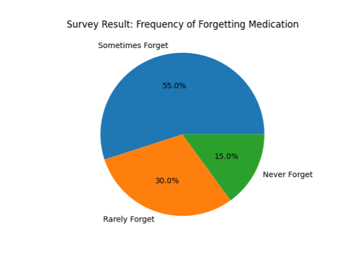
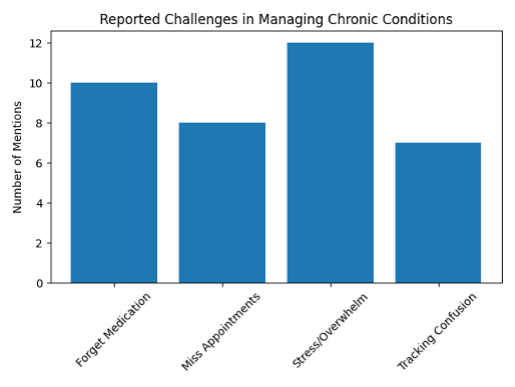
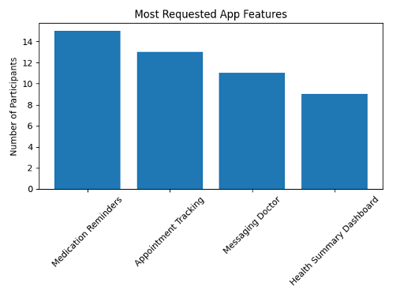
4. Personas
Three user archetypes guiding the UX.
Personas represent typical users: two patients (different lifestyles/tech comfort) and one healthcare professional.
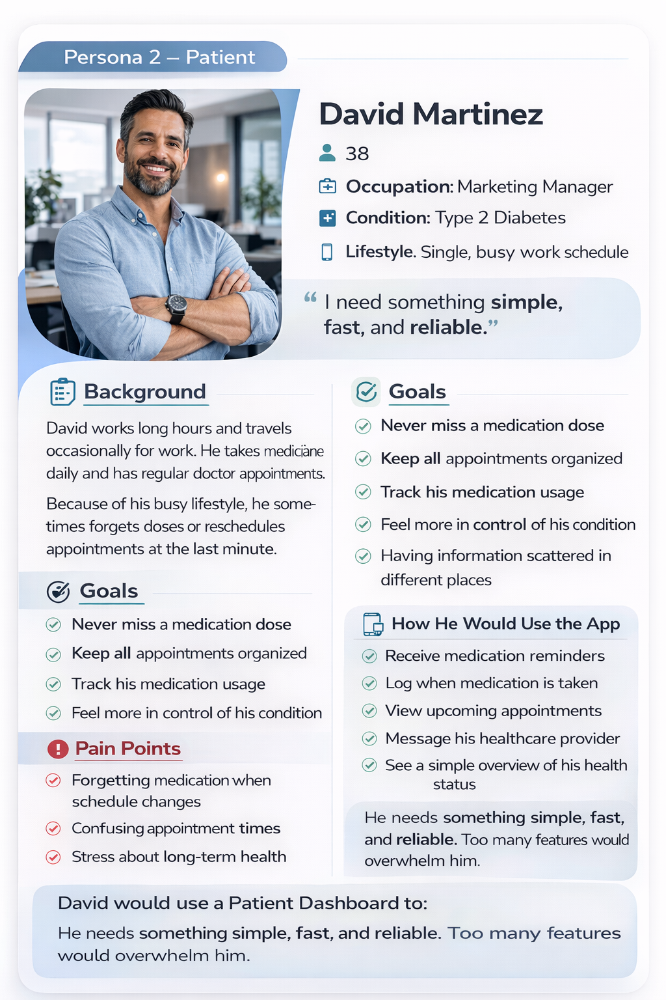
4.1 David Martinez — Patient (Single, busy professional)
David uses apps daily but wants something simple. The design focus is speed, simple reminders, and minimal steps.
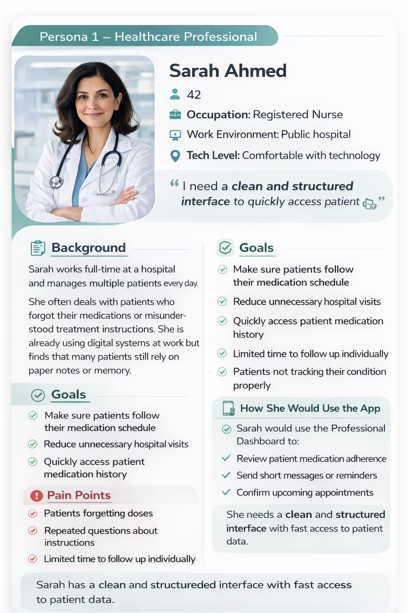
4.2 Sarah Ahmed — Healthcare Professional
Sarah needs fast access to adherence and patient info. The professional dashboard supports efficiency and quick actions.
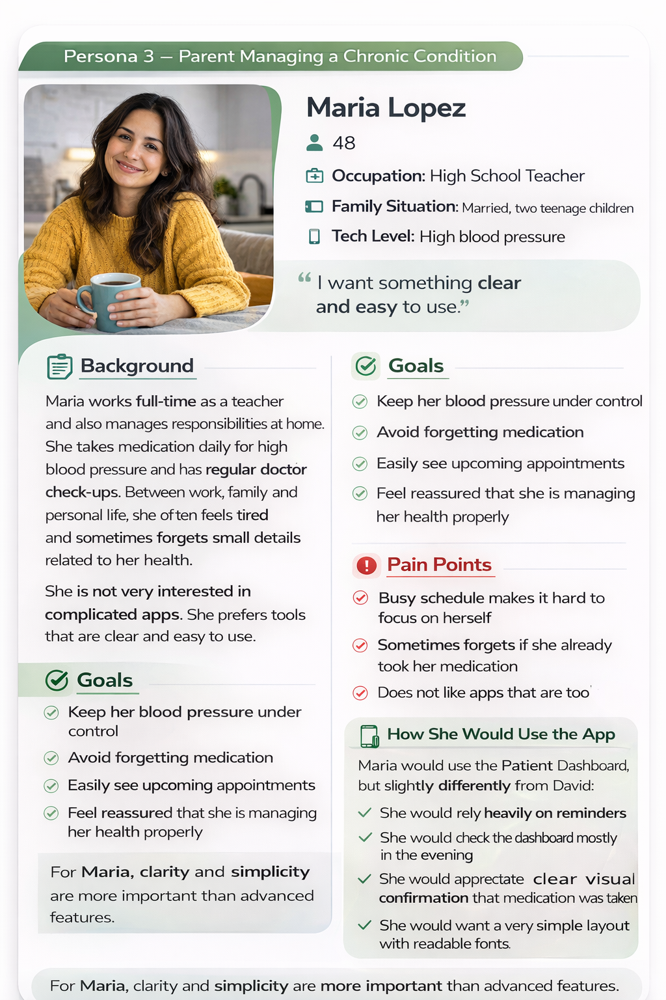
4.3 Maria Lopez — Patient (Parent, moderate tech comfort)
Maria is comfortable with a phone but doesn’t want a technical app. The design focus is readability, clear history, calm screens.
5. User Journey Mapping
Maria + Sarah journeys translating needs into UI.
5.1 Maria — Medication Reminder & Confirmation (Patient)
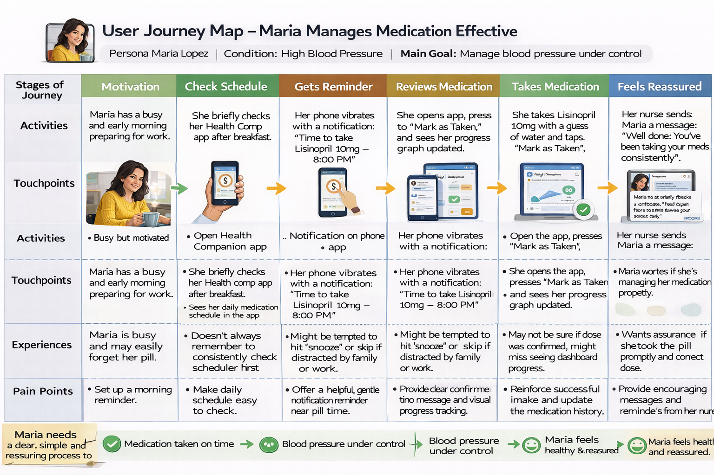
Design opportunities
- Clear reminder text
- One-tap confirmation (“Mark as Taken”)
- Calm success feedback (green check)
- Simple medication history without clutter
Table 1 — Maria Lopez’s User Journey Table
| Stage | Touchpoint | User Action | Thoughts | Emotion | Pain Point / Design Opportunity |
|---|---|---|---|---|---|
| Reminder | Push notification | Sees medication reminder | “Good, I needed that” | Reassured | Notification text must be clear |
| Open app | Medication reminder screen | Taps notification | “Let me confirm quickly” | Focused | One-tap confirmation |
| Confirm | Mark as Taken | Marks as taken | “Done” | Relief | Clear success feedback (green check) |
| History | Medication history list | Sees taken record | “Ok I didn’t forget” | Confidence | Show simple history without clutter |
5.2 Sarah — Managing Patients (Healthcare Professional)
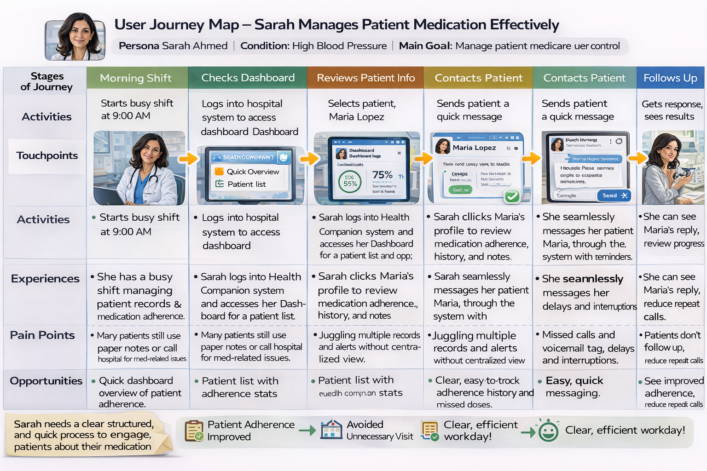
Design priorities
- Speed + minimal clicks
- Clear adherence overview
- Easy identification of missed doses
- Quick templates / fast messaging
Table 2 — Sarah Ahmad’s User Journey Table
| Stage | Touchpoint | User Action | Thoughts | Emotion | Pain Point / Design Opportunity |
|---|---|---|---|---|---|
| Morning Login | Professional Portal – Sign In | Opens app, enters email & password, logs in | I need quick access to my patients. | Focused | Enable biometric login to reduce friction and save time. |
| Check Dashboard | Professional Dashboard – Home | Views urgent alerts, checks ‘Needs Attention’, opens Patient List | Who needs my attention first? | Alert but confident | Highlight critical alerts clearly with badges and priority colors. |
| Review Patient Adherence | Patient Analytics Page | Searches patient, opens adherence calendar, reviews stats | Is this patient following their medication schedule? | Analytical | Use clear color-coded calendar (Green = Taken, Yellow = Late, Red = Missed). |
| Identify Issues | Medication Adherence Dashboard | Identifies missed doses and low adherence percentage | This patient may be at risk. | Concerned | Automatically flag low adherence with visible warnings. |
| Send Message | Messages – Patient Conversation | Opens chat, sends reminder or answers patient questions | Let me follow up quickly without making a phone call. | In control | Provide quick-reply templates to minimize typing and clicks. |
| Follow-up & Monitor | Analytics + Dashboard Overview | Rechecks adherence stats and dashboard updates | Did the patient improve after my message? | Reassured if improved | Show trend graphs and improvement indicators for fast evaluation. |
6. UI Design Decisions & Justification
Calm healthcare aesthetic + accessibility-first choices.
6.1 Color palette
A minimalist medical palette: soft navy blue as the primary color and light green for confirmations. Blue supports trust/calm; green is reserved for positive confirmation states so it doesn’t overwhelm. White and light grey keep the UI clean and easy to scan.
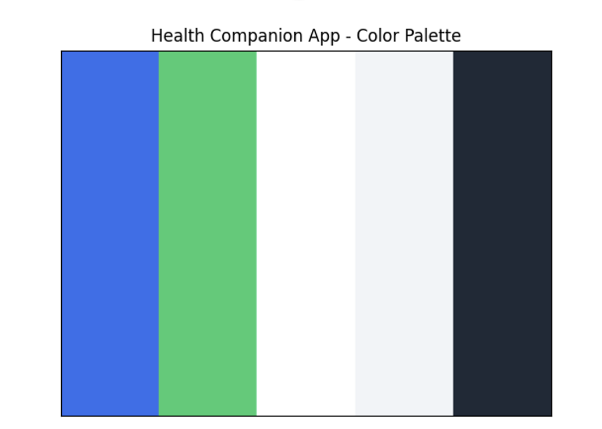
6.2 Typography
Clean sans-serif fonts (Inter/Roboto/Open Sans) support readability on mobile + web. Comfortable body sizes (~16px) and spacing reduce frustration for adults 30–55.
- Readability: clear text, high contrast, spacing
- Learnability: consistent labels and section titles
- Memorability: consistent typography patterns across screens
6.3 UI components (Buttons & feedback)
Large tap targets and clear labels (e.g., “Mark as Taken”) reduce user errors. Success feedback (green checkmark) confirms completed actions.
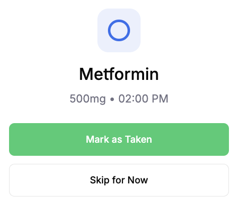
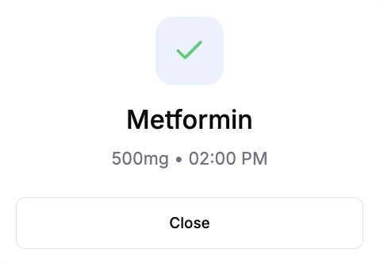
6.4 Inclusivity & accessibility
Adjustable font size
Support readability preferences and comfort.
High contrast mode
Better visibility for varied visual needs.
Voice messaging
Helpful for motor/vision accessibility and convenience.
Multi-language support
Language selection + message translation.
ADHD-friendly layout
Minimal clutter, limited bright colors, clear hierarchy.
Accessibility basics
Large tap targets, clear errors, screen-reader friendly structure.
7. Sketches, Wireframes & Design (Figma)
From rough sketches to structured wireframes.
7.1 Key Screens Sketches
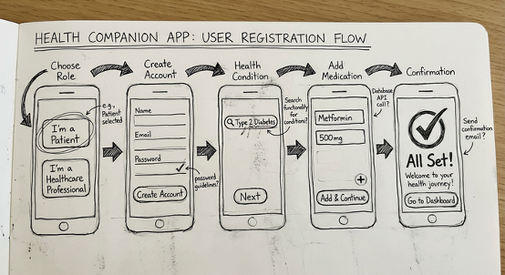
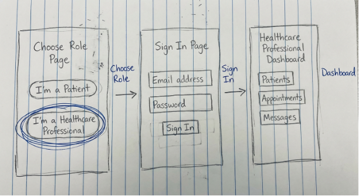
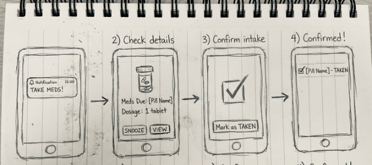
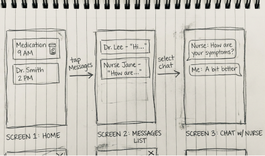
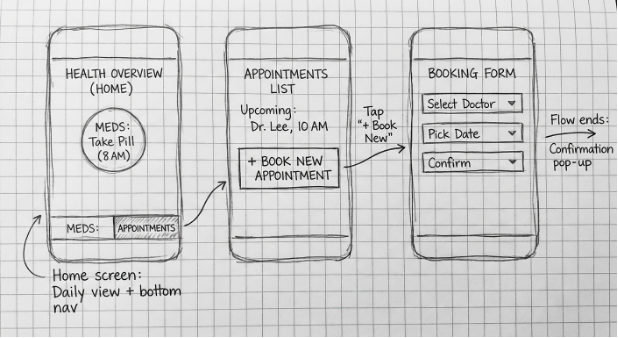
7.2 Key Screens Wireframes
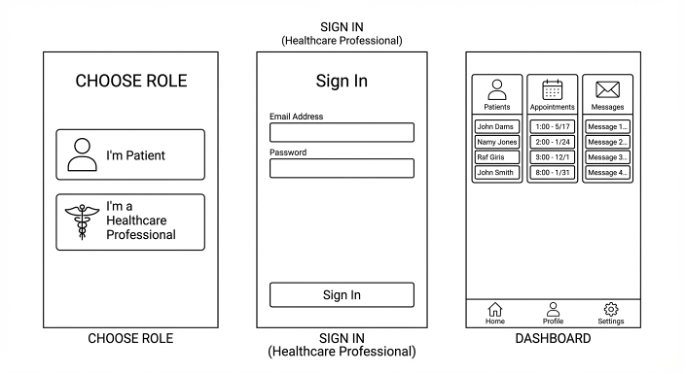
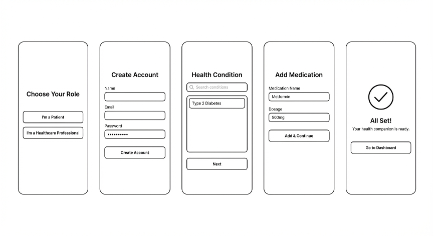
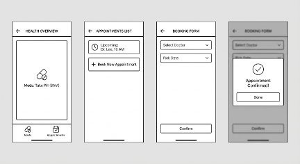
8. User Flow (Patient & Healthcare Professional)
A complete flow from role selection to key tasks.
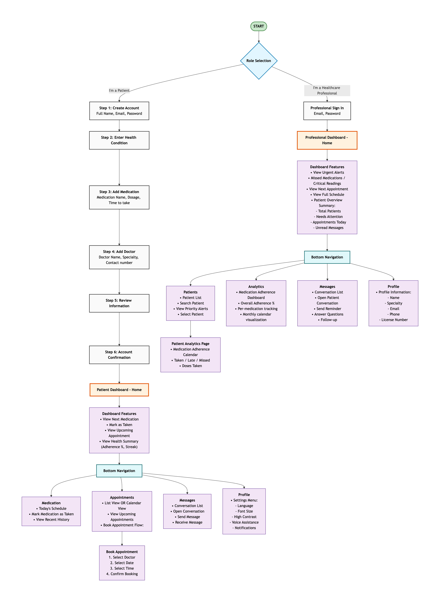
9. Storyboards
Two storyboards: one per role, each performing a key task.
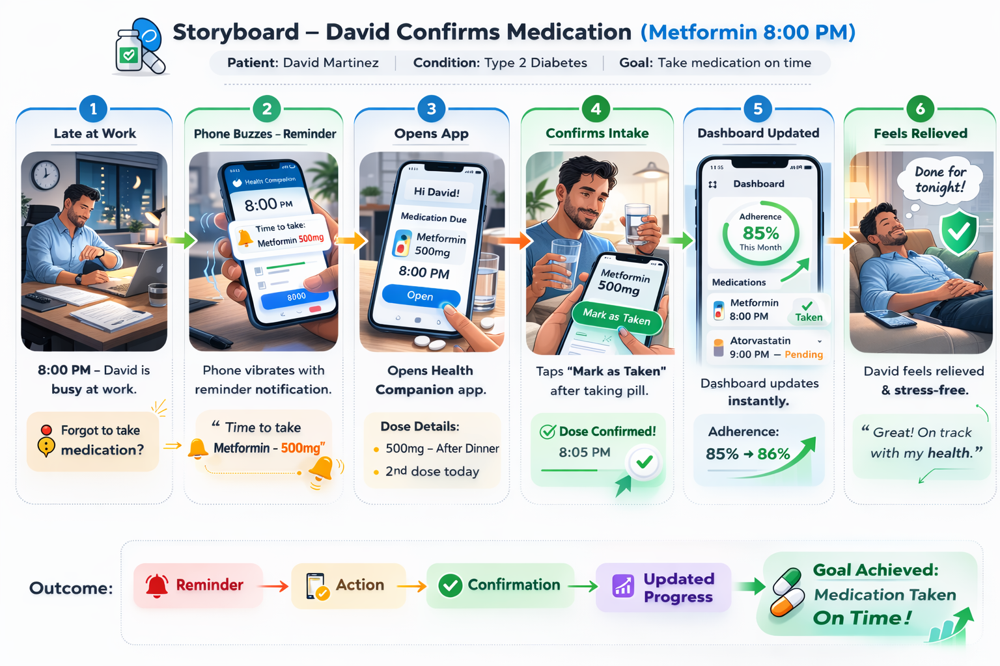
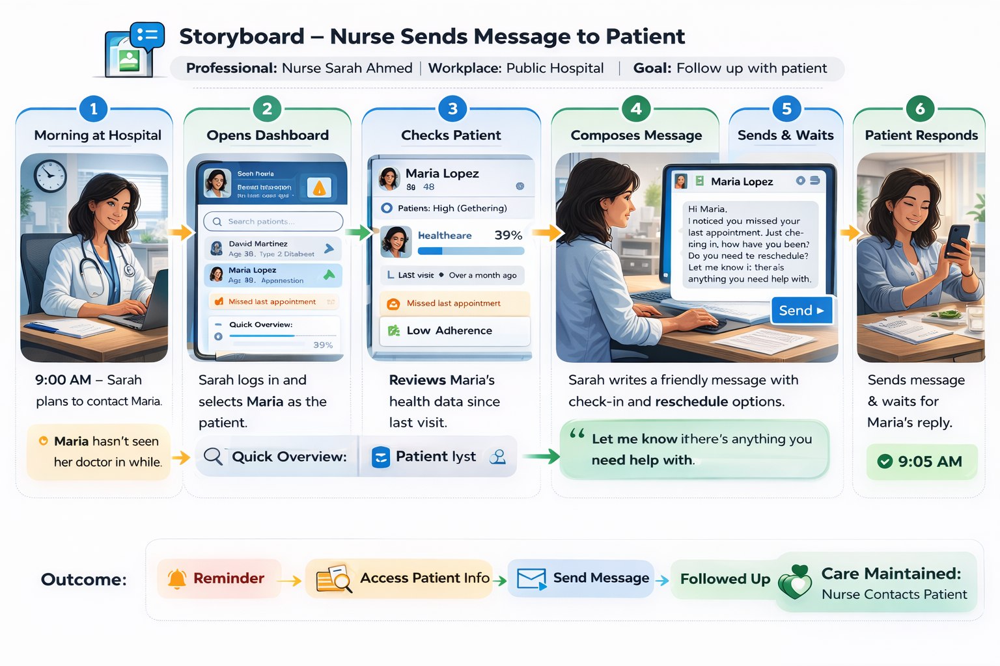
10. Design & Prototype
Final dashboard screens for patients and professionals.
10.1 Patient dashboard
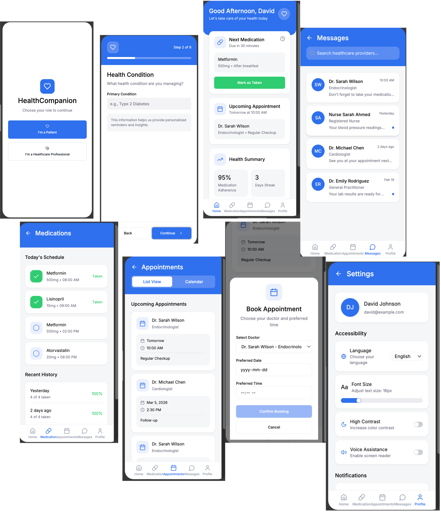
10.2 Healthcare professional dashboard
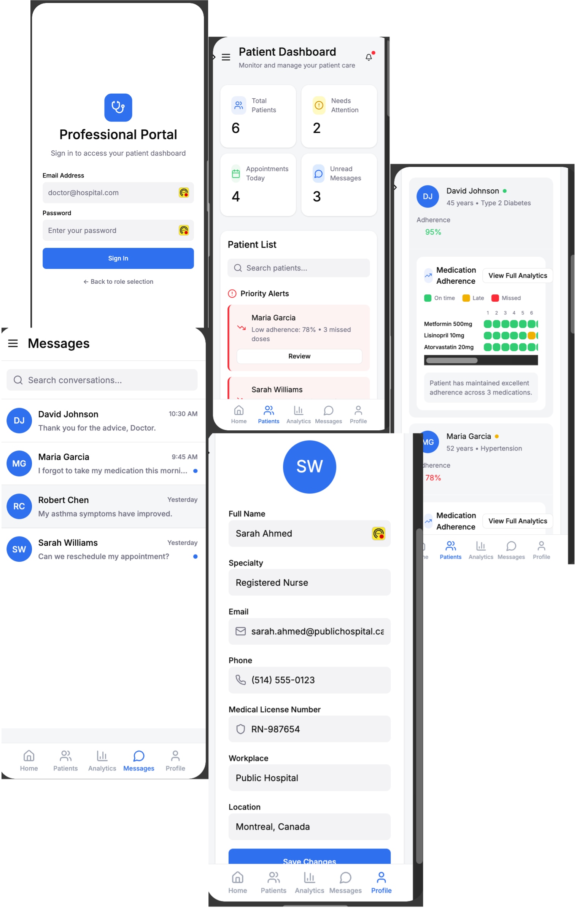
Clickable prototype
11. Usability Testing
How the prototype was evaluated.
11.1 Testing goals
The test checked whether users could complete key tasks without confusion and whether the UI felt simple and trustworthy.
- Onboarding clarity
- Medication confirmation
- Appointment booking clarity
- Messaging clarity
11.2 Participants
- 2 adults aged 30–50 (non-design background)
- 1 healthcare professional
11.3 Tasks
- Create an account and add a medication
- Confirm a medication reminder
- Book a follow-up appointment
- Send a message to the doctor (text)
11.4 Method & data collection
Testing was done in-person and remotely (screen sharing). Participants were asked to think aloud. Feedback was collected via observation, notes, follow-up questions, and where users hesitated.
- Time to complete tasks (rough estimate)
- Number of errors/misclicks
- Hesitation points
- Direct quotes or paraphrased comments
11.5 How feedback was analyzed
Feedback was grouped into themes (navigation, clarity, visibility, accessibility) and prioritized by frequency and how much it blocked task completion.
12. User Feedback Summary & Design Iteration
What worked, what didn’t, and what changed.
12.1 Positive feedback
- Layout felt clean and professional
- Medication confirmation button was easy to find
- Color scheme felt calming and “medical”
- Bottom navigation was familiar and easy
12.2 Confusion / problems found
Appointments: calendar vs list confusion
Fix: set calendar as default + add a clear “Book Appointment” button.
Messaging: voice option not visible enough
Fix: increase microphone icon size.
Onboarding felt slightly long
Fix: merge fields and reduce steps while keeping clarity.
Font size preference
Fix: add font-size adjustment in settings.
13. Reflection
What was learned and what would be improved next.
This project highlighted that research matters before designing. Initially, it seemed like reminders were the main issue, but research showed stress, confusion, and lack of clarity were also major problems.
Personas helped design for different needs: David needed speed and efficiency, Maria needed simplicity and readability, and Sarah needed structured information quickly—supporting both a patient dashboard and a professional dashboard.
Inclusivity also changed the approach: considering visual impairments, ADHD, and language barriers encouraged reduced clutter, improved contrast, voice messaging, and multi-language options.
The biggest challenge was balancing features with simplicity. Usability testing showed that small choices (icon visibility, default views) can affect the overall experience.
With more time, the next step would be larger usability testing with more diverse users and possibly A/B testing between navigation layouts.